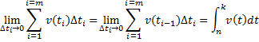
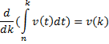
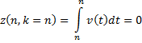
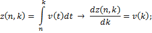
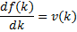
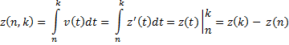

Интеграл - это предел, к которому стремится сумма произведений значений функции на разность значений аргументов при стремлении к нулю всех разностей аргументов:

Теорема Ньютона-Лейбница: производная от определенного интеграла по его верхнему пределу равна значению подынтегральной функции на верхнем пределе.

Определенный интеграл равен нулю, когда верхний и нижний пределы его совпадают:


пусть:

Данное уравнение не полностью определяет f(k) - прибавление любой константы не изменит производную функции. Таким образом, функцию вида f(k) + C называют неопределенным интегралом функции v(k): производная f'(k) такая же, как у определенного интеграла z(n, k) - поэтому её называют интегралом; к функции можно прибавить любую постоянную величину, поэтому - неопределенный.
Определенный интеграл является одним из решений неопределенного, следовательно:
;
;
;
То есть:
